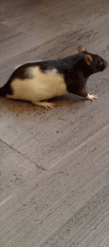
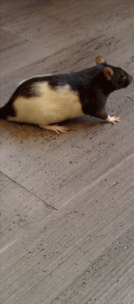
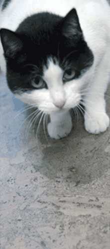
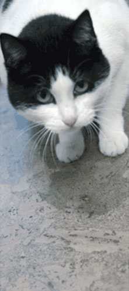

|
|
Теплые полы из пробки.
Напольные пробковые покрытия в Саратове.
Клеящиеся
пробковые полы
коллекция PK
Мы предлагаем
традиционно клеящиеся пробковые полы с размерами пластин
600 х 300 х 4 мм, 600 х 300 х 6 мм.
Как
ни удивительно, пробковые
полы, состоящие из тонких плит, способны выдерживать значительные
нагрузки. Они не деформируются под тяжестью мебели и оборудования,
поскольку пробка обладает высокой способностью к восстановлению своей
первоначальной формы. Обладают значительным сопротивлением скольжению.
Пробковая
сердцевина
напольных покрытий существенно снижает шум при ходьбе, амортизирует
давление, благотворно влияет на опорно-двигательный аппарат. По
пробковому полу легко и приятно ходить.
Пробковые
полы не требуют
какого-то особого ухода. Но существуют маленькие хитрости, помогающие
избежать возможных неприятностей. Например, чтобы не поцарапать пол,
можно наклеить на мебельные ножки кусочки фетра. Не стоит использовать
коврики с основой резины, она может оставить следы на поверхности.
Плавающие
пробковые полы коллекция CC
Пробковые плавающие полы изготовлены по новейшим технологиям,
ранее не использовавшимся при производстве аналогичной продукции, и
соответствует мировым стандартам качества. Более 80% продукции
экспортируется в Германию и Японию.
Пробковое покрытие производится только из экологически чистого сырья -
натуральной коры пробкового дуба семейства буковых, где португальские
плантации таких деревьев никогда не орошаются и не обрабатываются
гербицидами, и другими химическими удобрениями.
Наша продукция изготавливается на новейшем, современном оборудовании
и проходит многоступенчатый контроль качества. Плавающие пробковые полы
прошли все испытания с наилучшими показателями, согласно требованиям
европейских стандартов EN427, EN428, EN433, EN660, EN685. В
соответствии с классификацией DIN 4102, он относится к классу горючести
B2, при горении не выделяет токсичных веществ.
Надежность конструкции плавающих полов обеспечивается запатентованной
системой замкового соединения без клея UNICLIC - одной из лучших в
мире. Замковое соединение по всему периметру обработано специальной
влагоотталкивающей мастикой. Пробковые полы быстро и легко
укладываются, впоследствии их можно разбирать и собирать до трёх раз.
Определяющим фактором повышения износостойкости пробкового покрытия
является трёхслойное нанесение на лицевую поверхность поли-уретанового
лака на водной основе.
Eco Cork
Клеящиеся полы Eco
Cork
- это благородный материал, который преобразит
практически любое помещение, будь то прихожая или гостиная, спальня,
кухня или ванная комната, придавая окружающей вас обстановке
завершенность и
уют.
Cork Parquet
Коллекция Cork Parquet
предлагает вам теплые практичные полы, которые
можно
укладывать во всех
жилых помещениях (в том числе, в помещениях с
повышенной влыжностью). Эти полы внесут завершающий аккорд в композицию
вашего стиля и
станут превосходной
альтернативой традиционным
полам.
Orginals Xtreme WRT
Нет ничего
оригинальнее
того, что создает сама природа! Уникальное
сочетание
натуральных материалов
и космических технологий, как нельзя лучше нашли
свое
отражение
в коллекции с новым изностойким лаком "Xtreme
WRT".
Wood-o-Floor
Представляет собой
пластины, декорированные шпоном натурального дерева
ценных
пород. В отличие от
полов Corkstyle, напольные порытия Wood-o-Floor
имеют
повышенную
износостойкость, благодаря верхнему защитному слою из
поливинила.
Exotic
Cимвол жизни и
долговечности. Декоративная девственная кора векового
дуба для
отделки пола в
авторских интерьерах сделает Ваш дом
неповторимым.
Identity
Данная коллекция
представлена классической палитрой 21 цвета.Сделай
правильный
выбор в этой игре
света
и
тени.
Identity
Xtreme WRT
"Плавающие"
напольные покрытия Identity с новым защитным слоем
износостойкого
лака
"Xtreme WRT", найдут достойное применение в интерьере, подчеркнув,
при этом,
Вашу
индивидуальность.
Personality
Xtreme WRT
"Плавающие"
напольные покрытия коллекции Personality представляют собой
пластины
со шпоном пробки различных цветов. Эта коллекция прекрасно
подходит
для
создания интерьеров в спальнях, гостинных и детских комнатах.
Простота укладки
и
высокие эксплуатационные качества защитного слоя лака "Xtreme WRT"
обеспечат
Вам
максимум уюта и
комфорта.
Personality
Также
представленная 6 цветами, эта коллекция показывает себя
индивидуальным характером пробковой текстуры в мягких и элегантных
тонах.
Nuances
Xtreme WRT
Основываясь
на натуральных текстурах, наша компания предлагает
широкий
спектр
цветных, авангардных решений, с помощью которых можно создать
неповторимый
дизайн в любом
интерьере.
Nuances клеевые
Основываясь на
натуральных текстурах, наша компания предлагает широкий
спектр цветных,
авангардных решений, с помощью которых можно создать
неповторимый дизайн в
любом интерьере.
|

|

 
 
